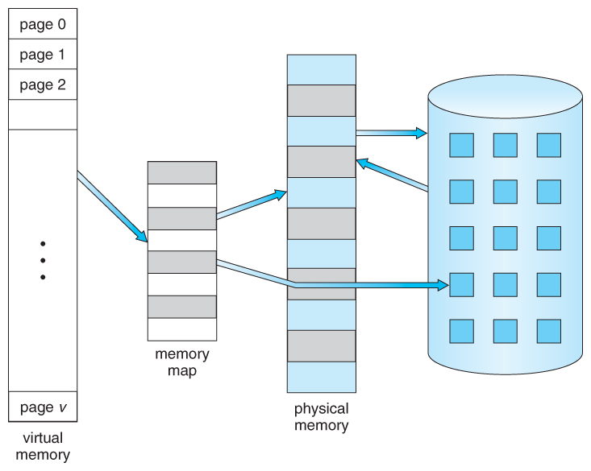

Early operating systems gave every process the freedom of reading and modifying any memory region they want, including those allocated for other processes. While this keeps things simple, it also poses some problems:
- What if one of the processes is buggy or outright malicious? How do we prevent it from modifying the memory allocated for other processes while still keeping inter-process communication through memory possible?
- How do we deal with memory fragmentation? Say, we have 4MB of memory, process A allocates the first 1MB for itself, then process B claims the next 2MB, then A terminates and releases its memory, and then process C comes and asks for a contiguous 2MB region — and can’t get it because we only have two separate 1MB slices. Restarting process B or somehow stopping it and shifting all its data and pointers by one megabyte doesn’t seem like a good solution.
- How do we access non-RAM memory types? How do we plug a flash drive and read a specific file from it?
These problems are not that critical for some specialized computer systems such as GPUs, where you typically solve just one task at a time and have full control over the computation, but they are absolutely essential for modern multitasking operating systems — and they solve all these problems with a technique called virtual memory.
#Memory Paging
Virtual memory gives each process the impression that it fully controls a contiguous region of memory, which in reality may be mapped to multiple smaller blocks of the physical memory — which includes both the main memory (RAM) and external memory (HDD, SSD).

To achieve this, the memory address space is divided into pages (typically 4KB in size), which are the base units of memory that the programs can request from the operating system. The memory system maintains a special hardware data structure called the page table, which contains the mappings of virtual page addresses to the physical ones. When a process accesses data using its virtual memory address, the memory system calculates its page number (by right-shifting it by $12$ if $4096=2^{12}$ is the page size), looks up in the page table that its physical address is, and forwards the read or write request to where that data is actually stored.
Since the address translation needs to be done for each memory request, and the number of memory pages itself may be large (e.g., 16G RAM / 4K page size = 4M pages), address translation poses a difficult problem in itself. One way to speed it up is to use a special cache for the page table itself called translation lookaside buffer (TLB), and the other is to increase the page size so that the total number of memory pages is made smaller at the cost of reduced granularity.
#Mapping External Memory
The mechanism of virtual memory also allows using external memory types quite transparently. Modern operating systems support memory mapping, which lets you open a file and use its contents as if they were in the main memory:
// open a file containing 1024 random integers for reading and writing
int fd = open("input.bin", O_RDWR);
// map it into memory size allow reads and writes write changes back to the file
int* data = (int*) mmap(0, 4096, PROT_READ | PROT_WRITE, MAP_SHARED, fd, 0);
// sort it like if it was a normal integer array
std::sort(data, data + 1024);
// changes are eventually propagated to the file
Here we map a 4K file, which can fit entirely on just a single memory page, but when we open larger files, its reads will be done lazily when we request a certain page, and its writes will be buffered and committed to the file system when the operating decides to (usually on the program termination or when the system runs out of RAM).
A technique that has the same operating principle, but the reverse intention is the swap file, which lets the operating system automatically use parts of an SSD or an HDD as an extension of the main memory when there is not enough real RAM. This lets the systems that run out of memory just experience a terrible slowdown instead of crashing.
This seamless integration of the main and external memory essentially turns RAM into an “L4 cache” for the external memory, which is a convenient way to think about it from the algorithm design perspective.